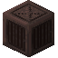
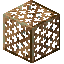

窑窑是一种用于在玩家定义的区域内大量熔炼物品的结构。窑由火箱、至少一个格栅和防火材料构成。



火箱的界面有一个温度指示器和 16 个槽位。这些槽位全部用于燃料。任何燃料都可以使用。在开放空间中，火箱不会加热任何东西。温度低于亮红色时，它可以加热 64 个方块，高于亮红色时则可以加热 128 个。火箱加热一定体积所需的时间与方块数量和目标温度成正比。
火箱从其上方第一个方块开始加热。火箱的热量可以穿过不遮挡的方块以及格栅。因此，建议在火箱顶部放置一个格栅，让热量向上传入你的结构，并从下方提供维护通道。
窑的外壁必须由黏土砖、耐火砖、遮光玻璃或防火门的某种组合构成。石砖不行。如果在加热过程中结构被破坏，加热进度就会丢失，必须重新密封后才能重新开始。如果温度偏离初始设定点，计时器也会重启。

2

防火门可以用铸铁薄板制作。